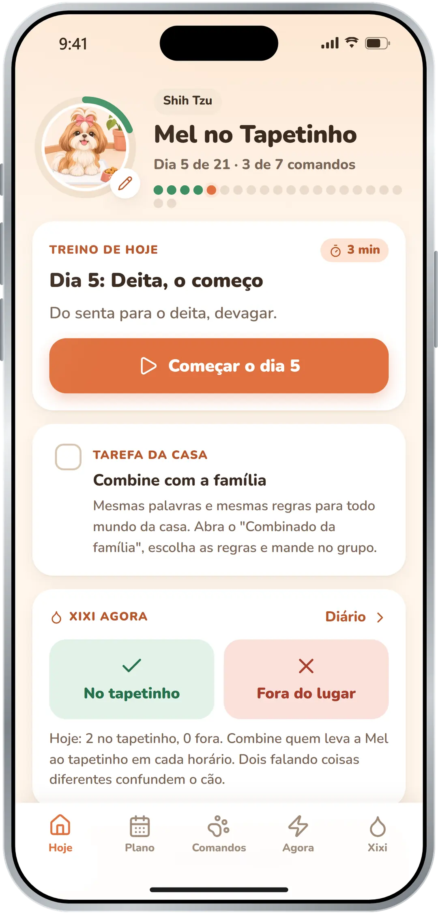
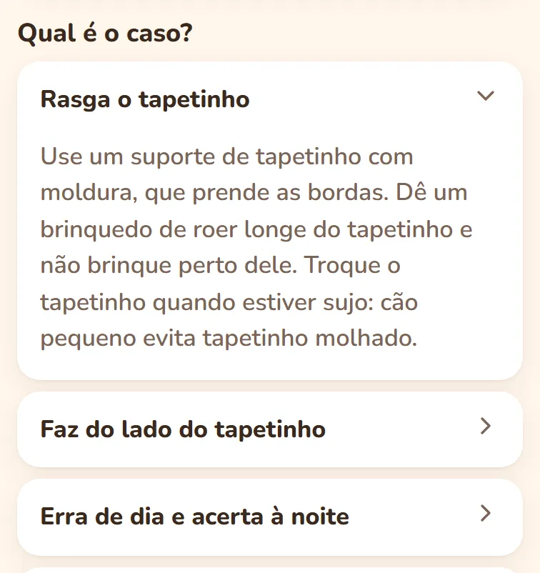
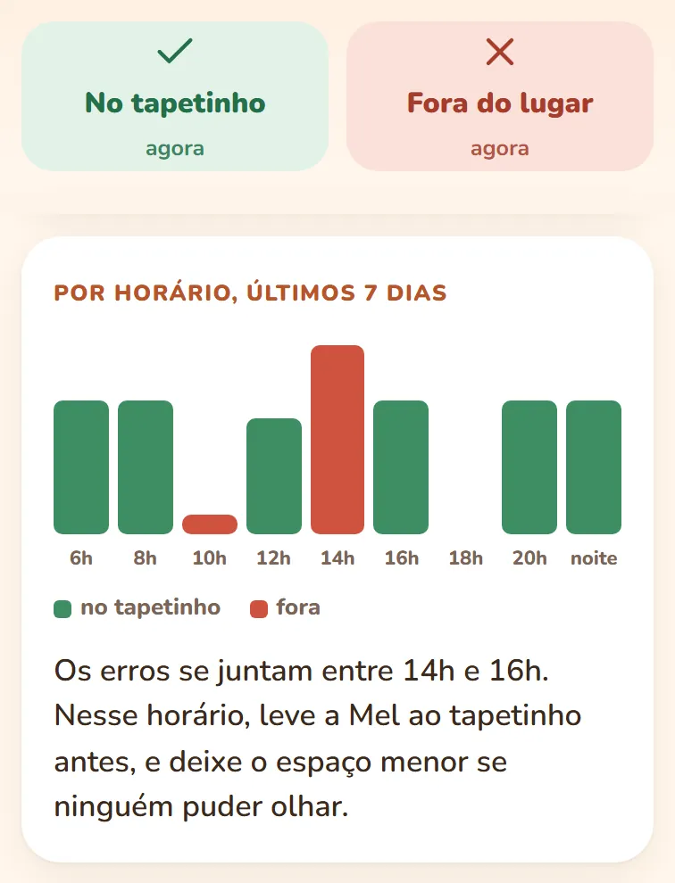
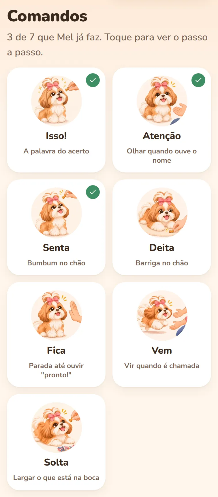
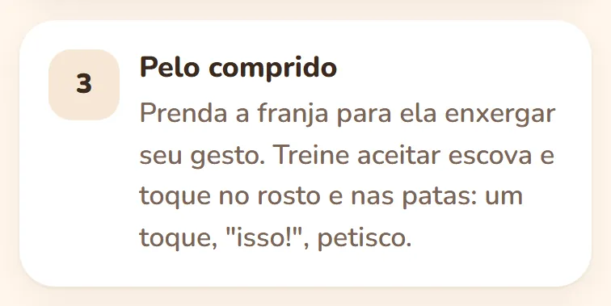
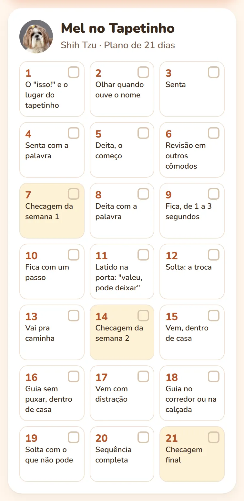
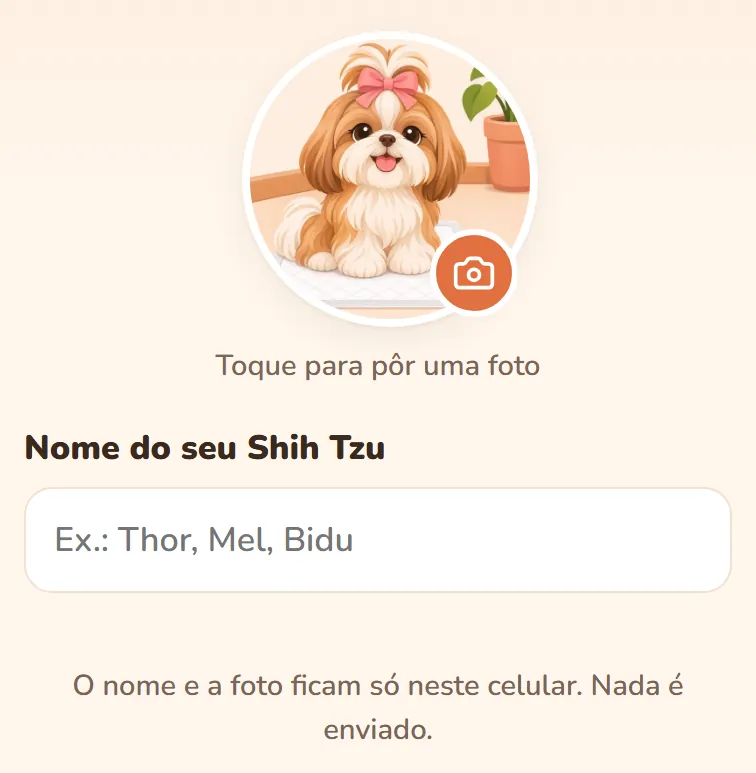

Para quem tem Shih Tzu
Se o seu Shih Tzu faz xixi pela casa, o app mostra o que fazer hoje, em 3 minutos.
Um app de adestramento só do Shih Tzu. Você põe o nome e a foto dele, e todo dia abre o treino curto, a tarefa da casa e o diário do xixi. Sem gritar e sem castigo.

R$ 37 uma vez só · Pix ou cartão · no seu celular
Tapetinho novo, atrativo, jornal. E o Shih Tzu continua fazendo xixi no tapete da sala.
Faz do lado, rasga o tapetinho, acerta de noite e erra de dia.

Ele não faz xixi fora por pirraça
Cachorro repete o que deu certo. Bronca depois do xixi só ensina a esconder.
Por isso o app premia o acerto na hora e arruma a casa para ele não errar.
São 21 dias, um passo por dia. Roteiro de treino, não promessa: não deu certo, repita o dia.
O xixi começa no dia 1
A tela de hoje lembra quando levar ao tapetinho. Fez lá: "isso!" e petisco.
Fez fora: dois toques no diário. Ele mostra o horário em que a Mel mais erra.

Xixi toda hora e pouco de cada vez? O app manda primeiro ao veterinário.
R$ 37 uma vez só
Feito para o Shih Tzu, não para cachorro em geral
O treino leva em conta o corpo e o jeito do Shih Tzu. Os 7 comandos vêm desenhados com ele.

- Treino nas horas frescas, num cômodo ventilado.
- Brinquedo comprido, nada de cabo de guerra perto do rosto.
- Guia no peitoral, não na coleira.
- Ficar sozinho treinado cedo, a partir do dia 8.

Orientação geral da raça, não avaliação de saúde.
Aconteceu agora? Um toque e você vê o que fazer
Latido, choro sozinho, mordida, guia, visitas: o que fazer já e quando buscar ajuda.
O que vem no app do Shih Tzu
- O treino de hoje, de 3 minutos
- O plano de 21 dias
- 7 comandos desenhados com o Shih Tzu
- Agora: 8 problemas do dia a dia
- O diário do xixi
- Meu Shih Tzu: o que muda na raça
- O combinado da família, para mandar no WhatsApp
- De bônus, o kit para imprimir, com o nome dele

No Tapetinho por R$ 37, uma vez só
Preço de lançamento
de preço cheio R$ 69,90 por R$ 37
Sem mensalidade. Pix ou cartão.
O acesso chega no e-mail quando o pagamento confirma.

Não serviu? Você tem 7 dias para pedir o reembolso pela Cakto.
Dúvidas
Serve para filhote e para adulto?
Sim, o plano começa do zero. Para os 90 primeiros dias, há um adicional opcional no pagamento.
Moro em apartamento. Serve?
Sim. O treino é na sala, com o tapetinho. A rua só entra na semana 3.
Em 21 dias ele vai estar educado?
Os 21 dias são o roteiro do treino, não prazo de resultado. Cada cão tem o seu ritmo.
Tem mensalidade?
Não, R$ 37 uma vez só. No pagamento aparecem adicionais opcionais; só entram se você marcar.
Preciso baixar na loja de aplicativos?
Não. O app abre pelo link do e-mail, no navegador do celular.
Meu cão morde ou avança em pessoas. Serve?
Para mordida de brincadeira, sim. Se morde pessoas ou pode machucar, procure um profissional de comportamento.
Substitui o veterinário?
Não. É material educativo, e o app avisa quando é caso de veterinário.
Comece hoje pelo dia 1: o "isso!" e o lugar do tapetinho.
R$ 37 uma vez só